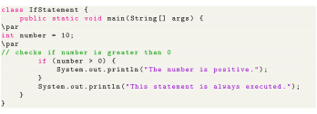
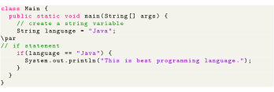
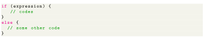
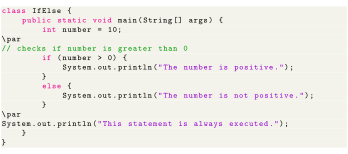
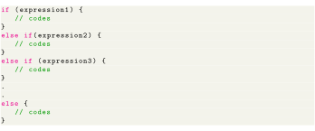
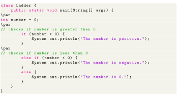

Next: Nested if..else Statement Up: Java if, if...else Statement Previous: Java if, if...else Statement Contents
In Java, the syntax of the if-then statement is:

Here expression is a boolean expression. A boolean expression returns either true or false.
Working of Java if statement

The output for the above code is as follows.
In the above example, we have a variable named number. Here, the test expression checks if the number is greater than 0 (number > 0). Since the number is greater than 0. So the test expression evaluates to true. Hence code inside the body of if is executed. Now, change the value of the number to a negative integer. Let's say -5. If we run the above program with the new value of the number, the output will be This statement is always executed.

Above program display This is best programming language as an output. Here, we are comparing two strings in the if block.
The if statement executes a certain section of code if the test expression is evaluated to true. However, if the test expression is evaluated to false, it does nothing. In this case, we can use an optional else block. Statements inside the body of else block are executed if the test expression is evaluated to false. This is known as the if-then-else statement in Java. The syntax of the if-then-else statement is:

Here, our program will do one task (task inside if block) if the test expression is true and another task (task inside else block) if the test expression is false.

The output for the above code is
In the above example, we have a variable named number. Here, the test expression checks if the number is greater than 0 (number > 0). Since the value of the number is 10, the test expression evaluates to true. Hence code inside the body of if is executed. Now, change the value of the number to a negative integer. Let's say -5, (int number = -5;). If we run the program with the new value of the number, the output will be:
Here, the value of number is -5. So the test expression evaluates to false. Hence code inside the body of else is executed.
In Java, we have an if...else...if ladder, that can be used to execute one block of code among multiple other blocks.

Here, if statements are executed from the top towards the bottom. As soon as the test expression is true, codes inside the body of that the if statement is executed. Then, the control of the program jumps outside the if-else-if ladder. If all test expressions are false, codes inside the body of else is executed.

Output from above code looks like The number is 0. In the above example, we are checking whether the number is positive, negative or zero. Here, we have two test expressions:
Here, the value of number is 0. So both the test expression evaluates to false. Hence the statement inside the body of else is executed.